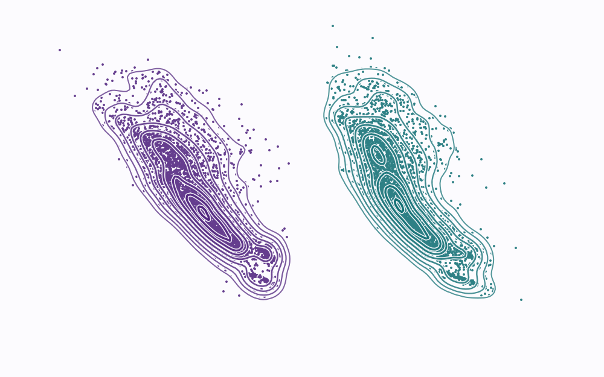

Learn a table’s fingerprint. Generate rows that share it.
Ectype learns a small, readable fingerprint of your table, generates as many realistic rows as you need from it, and checks them against evidence the generator never saw.
On 9 public datasets, its default model ranks 2nd of 10 methods at passing for real data, ahead of every deep-learning model tested, with a median fit of 10 seconds on a CPU. See the head-to-head.
Open source, Apache-2.0. Runs on your machine.

- Real rows fitted
- 15,216
- Rows generated
- 15,216
- Generated rows identical to a real row
- 0
Fig. 1 shows rows of a public table as points in three dimensions, one point per row and one axis per column: 4,000 real rows in purple and 4,000 rows generated by Ectype in teal. Nested ridges traced from the density of the real points form the cloud’s fingerprint; the generated rows, traced the same way, carry the same fingerprint. Ectype fitted 15,216 real rows and generated 15,216; 0 generated rows are identical to a real row.
Same shape. No row in common.
Fig. 1. fLength, fSize and fConc from MAGIC Gamma Telescope (UCI, public, CC BY 4.0): simulated air-shower images, training split of the benchmark; 4,000 rows of each shown. fLength is drawn on a log scale, the same for both clouds. Drag to turn.
A fingerprint is a file you can read
Measurements and a model, never raw rows. Inspect it, diff it, commit it.
It models places as coordinate pairs, times of day, identifiers in their own formats, columns that copy each other, entity attributes and replicate weights. New in 0.2
The fingerprint behind Fig. 3: 335.9 kB for a 24,000-row table.
manifest.jsonManifest- Columns and disclosure policy, under a published JSON Schema.
arrays/<name>.npyModel- Every column and the dependence between them.
targets/calibration.jsonCalibration targets- What the optimizer fits to.
targets/sealed.jsonSealed targets- Hash-committed, kept from the optimizer.
checksums.sha256Checksums- Tampered files fail to load.
The loop on the command line, as printed (long lines shortened).
- Calibration: what the optimizer fitted to. Never decides.
- Sealed: held back from it. These decide.
- A miss within sampling noise does not fail.
validate exits 1 on failure, so it can gate CI.
ectype profile customers.parquet -o customers.dfp \
--constraint "signup_date <= last_order_date" \
--derived "total=quantity * unit_price"wrote customers.dfp
1000 rows x 9 columns, policy=standard, targets=46 calibration + 40 sealed
joint model: chain_copula (effort="balanced", the default)
5 suggested constraints (review with: ectype constraints customers.dfp --list)
warning: small table (1000 rows): stored quantiles are coarse by policyectype generate customers.dfp --rows 5000 --seed 42 -o synthetic.parquetwrote 5000 rows to synthetic.parquet
seed=42 chunk_size=100000 chunks=1 acceptance=1.000 time=0.18s
note: constraint 'user_1' holds by construction (…); still checked on every rowectype validate customers.dfp synthetic.parquet --html report.htmlValidation PASSED fingerprint fc7086b09cd8 policy=standard rows=5000
structural 5/5 checks ok (columns, types, identifiers, row count)
constraints 1/1 hard constraints hold on every row
calibration 44/46 statistics within tolerance (95.7%); used in tuning, …
sealed 39/40 statistics within tolerance (97.5%); never used in tuning: …
0 fail beyond sampling noise (sensitivity standard: …)
wrote report.html
RESULT: PASSEDRead a table from its fingerprint
ectype report draws one page from the fingerprint alone, so it can go where the data cannot. Give it two and it shows what drifted.


Closer to real data than every deep-learning synthesizer we tested
9 public datasets, 5 seeds, every method at its defaults, every score on held-out real rows. Ectype’s quality score: 0.975. Real data against itself: 0.981.
Measured on ectype 0.2.0.
- of 10 methods at passing for real data (mean rank 2.1)
- 2nd
- median fit on a CPU. Deep models: a GPU and 2.3 to 6.5 minutes.
- 10 s
- of the real-data model score kept (median)
- 97.8%
- worst membership-inference AUC on any dataset; 0.5 is chance
- 0.505
Fig. 2 How easily a classifier tells each method’s rows from real ones. Shorter is better; at 0.5 it is guessing.
First place overall goes to sequential trees (CART), first on 8 of the 9 datasets, with Ectype ahead on California Housing. CART samples each value from a real training row and has the highest worst-case membership AUC of any method tested: 0.533, against 0.505 for Ectype.
Beyond the benchmark: 29 more public tables, 184 to 60,000 rows and up to 287 columns, with no failures.
Every method side by sideall seven measures
Lower is better for classifier AUC, rank and membership AUC. “Ectype” is ectype.fit(df); “Ectype, …” changes one setting.
| Method | Classifier AUC | Mean rank | Quality | Utility kept | Membership AUC, worst dataset | Median fit | Hardware |
|---|---|---|---|---|---|---|---|
| CART (sequential trees) | 0.596 | 1.1 | 0.980 | 98.3% | 0.533 | 2 s | CPU |
| Ectype | 0.671 | 2.1 | 0.975 | 97.8% | 0.505 | 10 s | CPU |
| Synthcity TabDDPM (diffusion) | 0.744 | 3.6 | 0.908 | 97.3% | 0.505 | 6.4 min | GPU |
| MOSTLY AI SDK (deep autoregressive) | 0.790 | 3.9 | 0.966 | 96.3% | 0.507 | 2.3 min | GPU |
| Ectype, forest model | 0.844 | 5.4 | 0.959 | 93.0% | 0.503 | 17 s | CPU |
| Ectype, fast | 0.903 | 6.6 | 0.957 | 91.1% | 0.503 | 7 s | CPU |
| ARF (adversarial random forest) | 0.941 | 6.8 | 0.922 | 97.0% | 0.517 | 3.9 min | CPU |
| SDV TVAE | 0.975 | 8.1 | 0.896 | 89.9% | 0.505 | 2.9 min | GPU |
| SDV CTGAN | 0.976 | 8.1 | 0.882 | 88.5% | 0.505 | 6.5 min | GPU |
| SDV Gaussian copula | 0.994 | 9.3 | 0.869 | 86.8% | 0.506 | 6 s | CPU |
| Real data (ceiling) | 0.499 | – | 0.981 | 100.0% | 0.749 | – | – |
| Independent columns (baseline) | 0.982 | – | 0.860 | 51.1% | 0.505 | 7 s | CPU |
How this was measured Every dataset and setting, including where others lead.
Same columns, different print
Column by column, Ectype and an independent-columns baseline look alike. How columns move together is the difference.
Fig. 3 Rank correlation (Spearman ρ) between all 24 columns of UCI Credit Default
a Held-out real rows
b Ectype synthetic rows
ρ from −1 (rose) through 0 (white) to +1 (teal); hatching marks ρ at or below −0.15. Both panels share one column order.
Point at a cell, or tab to panel b and use the arrow keys, to read both values.

What makes the match trustworthy
Held-back evidence, personal details replaced by default, and your rules on every row.
Sealed evidence
Sealed targets are hash-committed when you fit and opened only by the validator, so a pass is evidence the generator could not tune for. False discovery rate held at q = 0.05.
-
Personal details replaced
Names, phones, emails and addresses get consistent stand-ins. On a real 2.4 million-row public-records table, no synthetic row carried a real name or phone number.
-
Privacy, measured
Every fit runs under a disclosure policy; a built-in attack suite measures what an attacker could learn, copied rows included. Checked with Anonymeter too: in 24 of 27 comparisons on the nine benchmark tables, attackers did no better with Ectype’s rows than with real rows it never saw.
-
Rules on every row
Dates stay in order, totals add up, and rules you declare, such as
start <= end, hold on every row. Panels keep one row per entity and period, scenarios keep the relationships their inputs share, and multi-table schemas keep 100% referential integrity. -
Local, and safe to load
No cloud, GPU or LLM: a 2.4 million-row, 78-column table fits on a desktop CPU, and large tables fit faster, in bounded time. Loading a
.dfpnever runs code.
What people use it for
Wherever real data is locked down, personal, scarce or not collected yet.
Build and test software
Staging data with production’s odd cases, load tests at a thousand times the volume, fresh CI data.
Develop analytics and models
Start on features and dashboards while access to the real data is in review.
Share data across a boundary
With teams, partners, auditors or researchers, and across regions.
Watch for change
Fail a build when an upstream feed changes shape.
Explore what could happen
Shift an average or add rare cases, then generate that world.
Teach, demonstrate and sell
Demos and classroom data with realistic mess, free to hand out.
From banking, insurance and healthcare to retail, energy, logistics, government and education.
Give your agent a data tool
With Ectype’s MCP server, a separate package, an agent describes a table in a short spec and gets back checked rows. Agents can also call the library and command line directly.
Recorded in Claude Code
You
I'm building a churn dashboard for a gym and need test data. Make me 2,000 synthetic memberships in gym-members.csv: a unique member id, plan (60% basic, 30% plus, 10% premium), a join date in 2025, monthly visits averaging about 8, and a monthly fee set by the plan (basic 25, plus 45, premium 80). How well does the result match what I asked for?
Tool call
create_table_from_specoutput_path "gym-members.csv"rows 2,000spec 4 columns, 1 derived
Show the full spec
{ "name": "gym_members", "columns": [ {"name": "member_id", "type": "identifier", "kind": "int_sequence"}, { "name": "plan", "type": "categorical", "probs": { "basic": 0.6, "plus": 0.3, "premium": 0.1 } }, {"name": "join_date", "type": "datetime", "start": "2025-01-01", "end": "2025-12-31"}, {"name": "monthly_visits", "type": "numeric", "dist": "negbinom", "mean": 8, "r": 4} ], "derived": { "monthly_fee": { "expression": "lookup(plan, 'basic', 25, 'plus', 45, 'premium', 80)", "dtype": "Int64" } } }Result
spec_statusmatchesEach column and correlation: what the spec asked for and what the rows have Checked Asked Got Match member_idunique int_sequence 2000 unique of 2000 matches planbasic 0.6, plus 0.3, premium 0.1 basic 0.601, plus 0.308, premium 0.091 matches join_datespread evenly 2025-01-01 to 2025-12-31 2025-01-02 to 2025-12-31, median 2025-07-04 matches monthly_visitsnegbinom mean 8, sd 4.9 mean 7.98, sd 4.8 matches Wrote 2,000 rows to gym-members.csv and the fingerprint to gym-members.dfp. All 4 checks match the spec. Validation passed.
Agent
I wrote 2,000 rows to
gym-members.csv. Everything the generator reports matches what you asked for, within normal sampling noise. Plan mix: basic 60.1%, plus 30.8%, premium 9.1%. Monthly visits: mean 7.98.
Recorded in MCP SDK client
You
I need 50,000 e-commerce orders to test a returns model: customers, order and ship dates with shipping 1 to 7 days after the order, quantities, prices, totals that add up, 3% returned.
Agent
I’ll describe the table as a spec and create it in one call, so the rows come back checked.
Tool call
create_table_from_specoutput_path "orders.parquet"rows 50,000seed 42spec 8 columns, 1 derived, 2 rules, 1 correlation
Show the full spec
{ "name": "orders", "columns": [ {"name": "order_id", "type": "identifier", "kind": "int_sequence"}, {"name": "customer_id", "type": "numeric", "dist": "uniform", "lo": 0.5, "hi": 5000.5, "decimals": 0, "dtype": "Int64"}, {"name": "order_date", "type": "datetime", "start": "2024-01-01", "end": "2024-12-31"}, {"name": "ship_date", "type": "datetime", "start": "2024-01-02", "end": "2025-01-07"}, {"name": "quantity", "type": "numeric", "dist": "negbinom", "mean": 1.5, "r": 3, "shift": 1}, {"name": "unit_price", "type": "numeric", "dist": "lognormal", "mu": 3.4, "sigma": 0.6, "decimals": 2}, { "name": "channel", "type": "categorical", "probs": { "web": 0.7, "store": 0.3 } }, {"name": "returned", "type": "boolean", "p": 0.03} ], "derived": { "total": "round(quantity * unit_price, 2)" }, "constraints": [ "date_diff_days(ship_date, order_date) >= 1", "date_diff_days(ship_date, order_date) <= 7" ], "correlations": [ { "columns": [ "quantity", "unit_price" ], "rho": -0.3 } ] }Result
spec_statusmatchesEach column and correlation: what the spec asked for and what the rows have Checked Asked Got Match order_idunique int_sequence 50000 unique of 50000 matches customer_iduniform 0.5 to 5000.5 1 to 5000, mean 2506.1 matches order_datespread evenly 2024-01-01 to 2024-12-31 2024-01-01 to 2024-12-31, median 2024-07-01 matches ship_datespread evenly 2024-01-02 to 2025-01-07 2024-01-03 to 2025-01-07, median 2024-07-05 matches quantitynegbinom mean 2.5, sd 1.5 mean 2.49, sd 1.49 matches unit_pricelognormal median 29.96 median 30.14, mean 35.96 matches channelweb 0.7, store 0.3 web 0.697, store 0.303 matches returnedshare true 0.03 0.0315 matches quantity ~ unit_pricerank correlation -0.3 rank correlation -0.285 matches 2 of 2 rules hold on every row
Wrote 50,000 rows to orders.parquet and the fingerprint to orders.dfp. All 9 checks match the spec. Validation passed.
orders.parquet, 607 kB; orders.dfp, 9.7 kB
You
Now give me half a million.
Tool call
generate_rowsfingerprint_path "orders.dfp"output_path "orders-big.parquet"rows 500,000seed 1
Result
spec_statusmatchesWrote 500,000 rows to orders-big.parquet. All 9 checks match the spec.
orders-big.parquet, 5.7 MB
You
Check it.
Tool call
validate_rowsfingerprint_path "orders.dfp"table_path "orders-big.parquet"
Result
passedtrue- structure
- 5/5 checks ok
- rules
- 2/2 hard rules hold on every row
- sealed
- 40/40 targets passed; 0 failed beyond sampling noise
Agent
Done: 500,000 orders in
orders-big.parquet. Every rule holds on every row, and 40 of 40 sealed checks passed.
Tested with Claude Code.
Available
Add it to any MCP client with a configuration of this shape. Every file the server reads or writes stays inside the --root folders you name.
{
"mcpServers": {
"ectype": {
"command": "ectype-mcp",
"args": [
"--root",
"/path/to/project"
]
}
}
}- One call makes, saves and checks a table.
- Rules hold on every row.
- Nothing leaves the machine.
Take a print of your own table
Python 3.11, 3.12 or 3.13.
Version 0.2.0, 3,384 automated tests, fingerprint format 0.5.0.
# installed as ectype-data, imported as ectype
import polars as pl
import ectype
df = pl.read_csv("customers.csv")
fp = ectype.fit(df) # the default model, the one benchmarked above
fp.save("customers.dfp") # statistics and a model, no raw rows
synthetic = ectype.Generator.from_fingerprint("customers.dfp").generate(1_000_000, seed=42)
print(ectype.validate(fp, synthetic).summary()) # calibration | sealed | holdout, never merged
ectype.report(fp).to_html("customers-profile.html") # one page that describes the tableectype profile customers.csv -o customers.dfp
ectype report customers.dfp
ectype generate customers.dfp --rows 1000000 -o synthetic.parquet
ectype validate customers.dfp synthetic.parquet --html report.html